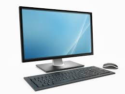
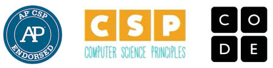
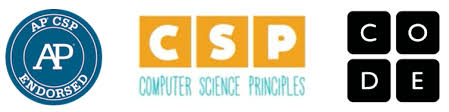

Computer Science and Me
I love the well known yet mystifying subject of computer science. The power of the computer intrigues me, and how such a relatively small piece of equipment has revolutioized the way we live. Computers are not powerful themselves, however. In fact, a common saying of programmers is the computer is the dumbest thing in the universe. It's only power is listening to human instructions. And I am fascinated by how to give this "dumb" electronic instructions that could make it a powerful tool used to shape human lives.
 

My fascination with writing the code that would be used to communicate with the computer began when I was in sixth grade. I looked over my mother's shoulder when she was working from home one day, and I saw meaningless gibberish on her screen. But then when she clicked the "Run code" button, that mumbo-jumbo on the screen turned into a beautiful webpage with charts, tables, headings, and text of every imaginable color. I was hooked.
My father got me started out on programming - he taught me the basics of HTML, and then introduced me to w3 Schools and Codeacademy, two excellent websites which had courses on every programming languages that is out there. I breezed through the HTML courses, touched a little Javascript, and experimented with some Python, getting a feel for these languages and seeing which ones agreed with me. When I finished these courses, I completed a few HTML projects of my own: a site about my best friends and I in sixth grade (I taught them the basics of HTML so that we could build a webpage that was all about Room 211), a game about StarWars that I built with the help of an Hour of Code, and a site which quizzes viewers about a variety of topics I was learning in school at the time, such as Spanish and American history. I poured my heart and soul into my projects, and they can be viewed below:
- Room 211 Squad Website (pardon the atrocious choices of color scheme - we were young, and we really had no coding experience. This was my first project).
- Star Wars Based Game (created using hourofcode.org)
- Essay on what computer Science is. This was another one of my AP Computer Science projects that I am pretty proud of.
Feel free to explore these seperate webpages, and view my previous website creations.
When high school rolled around, I immediately chose AP Computer Science Principles as one of my elective courses. Here was a chance for my to showcase my programming talents, and learn even more about the subject I loved. I love this class, and I relish the challenging projects and homework we get. This website itself is an AP CS project, and I have learnt a lot of HTML and CSS throughout the course of this project. AP Computer Science seems fun so far, and I'm ready and eager to complete even more projects in the future which could challenge me and make a better coder.